Vonnegut, Ranked
Sentimentally skewed by the order/age in which I read them. Featuring the covers I owned. Limiting myself to major works I read cover to cover here.
-
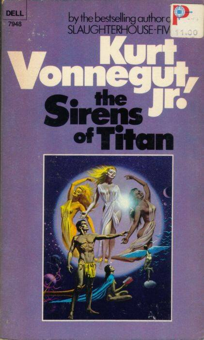
My first, around age 15. Probably higher ranking than it deserves because it blew my little teenage mind.
-
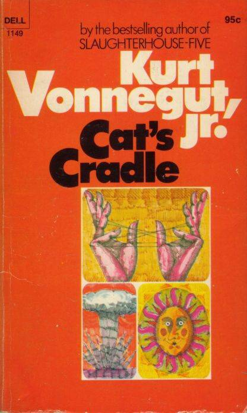
My third, also when I was 15. Probably my actual favorite.
-
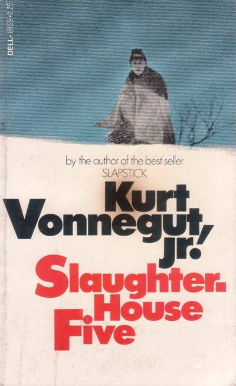
Not until I was 17 or 18 but up-ranked by awesomeness.
-
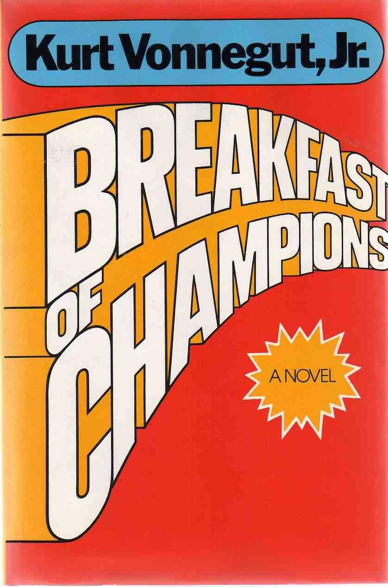
My fifth, when I was 16. Also blew my mind.
-
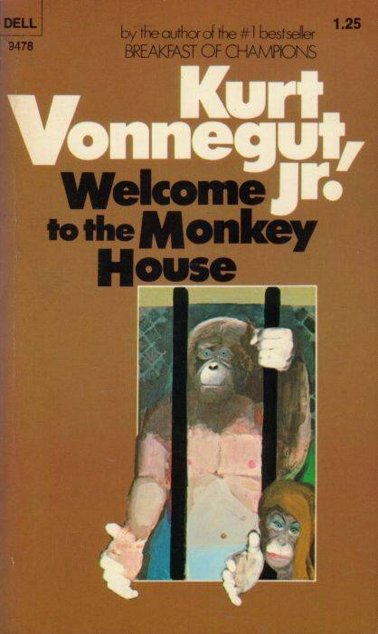
The fourth I read, also when I was 15, maybe 16. A mixed bag but this collection has some real gems.
-
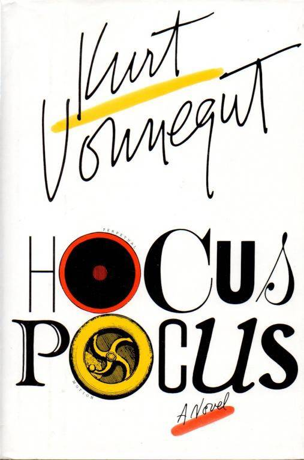
Read when I was 17. Upranked because I saw Vonnegut speak in Indianapolis when this was published and he signed my copy.
-
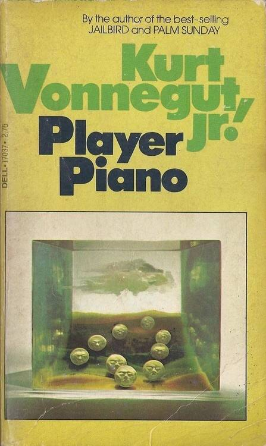
The second I read, when I was 15. I spent a lot of time thinking about this book after reading it.
-
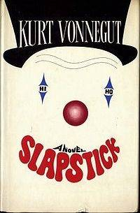
Read this one (an Deadeye Dick) on a long summer trip when I was 16.
-
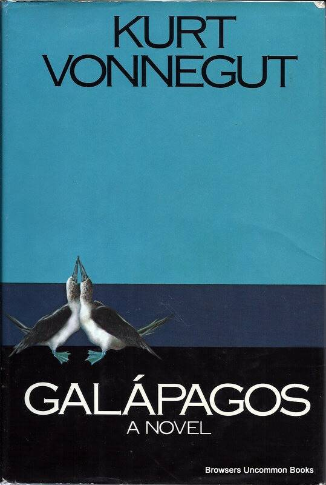
I did a school paper on this my sophomore year. I remember it was delightfully weird and cynical.
-
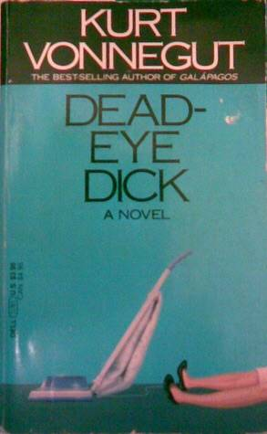
When I was 16. I didn't love this on my first reading but I've since grown to love it more.
-
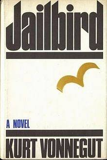
When I was 17. One of the last for me and for some reason I've never re-read it. Probably time to. I remember loving it.
-
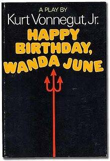
I remember reading this surreptitiously in class and not wanting to stop. Don't remember much else.
-
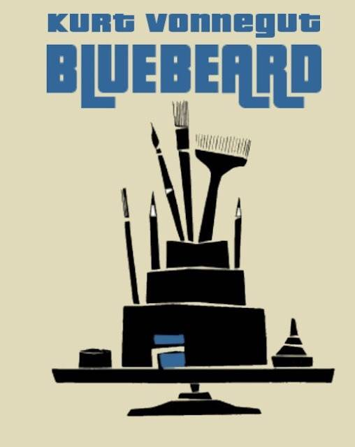
When I was 16 or 17. I haven't read it since. Again I probably should.
-
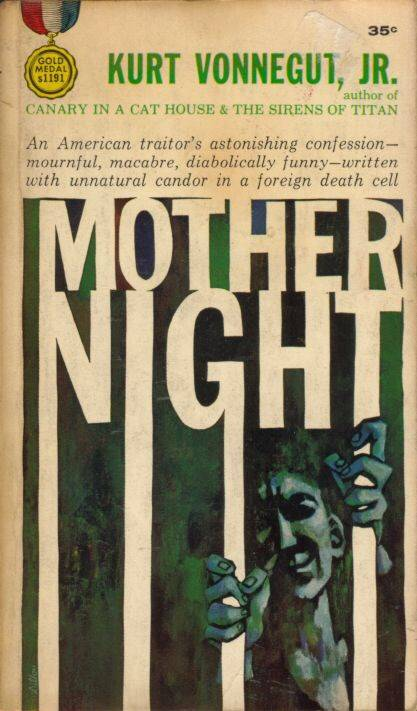
When I was 18 just to round out my obsession. Also need to re-read.
-
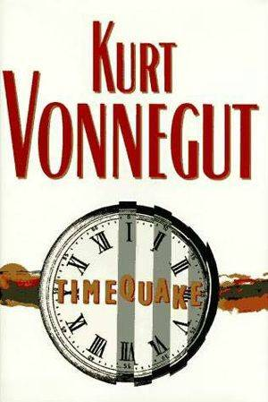
This wasn't published until four years after I finished high school. Not much of a novel. More the ramblings of a cranky brilliant mind too tired to pound its thoughts into something cohesive. Still essential Vonnegut.
-
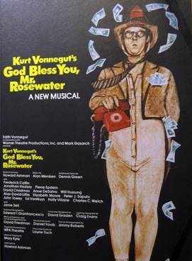
I can't find the cover I had. It was black, but not this one. Read when I was 16 and I didn't really like it much.